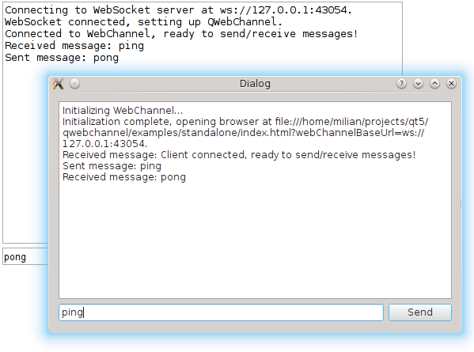

Qt WebChannel Standalone Example

The standalone example is a simple chat between a C++ application and a remote HTML client running in your default browser.
Running the Example
To run the example from Qt Creator, open the Welcome mode and select the example from Examples. For more information, visit Building and Running an Example.
Overview
The C++ application sets up a QWebChannel instance and publishes a Dialog object over it. For the remote client side, index.html is opened. Both show a dialog with the list of received messages and an input box to send messages to the other end.
The Dialog emits the Dialog::sendText() signal when the user sends a message. The signal automatically gets propagated to the HTML client. When the user enters a message on the HTML side, Dialog::receiveText() is called.
All communication between the HTML client and the C++ server is done over a WebSocket. The C++ side instantiates a QWebSocketServer and wraps incoming QWebSocket connections in WebSocketTransport objects, which implement QWebChannelAbstractTransport. These objects are then connected to the QWebChannel instance.
Files:
See also Qt WebChannel JavaScript API.